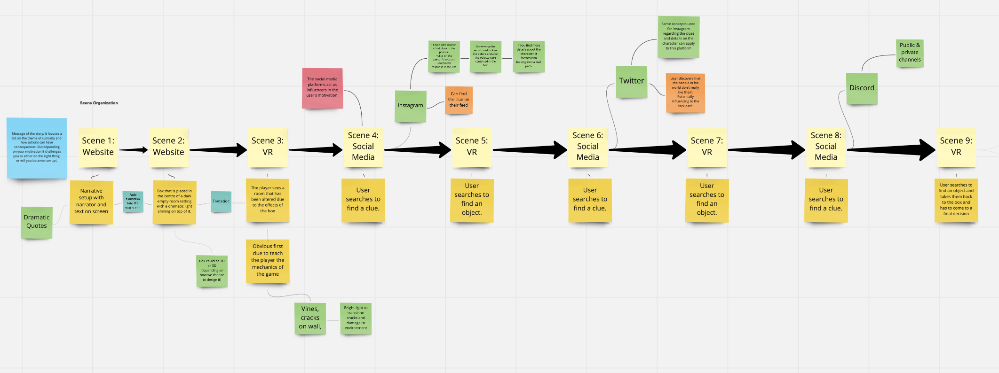
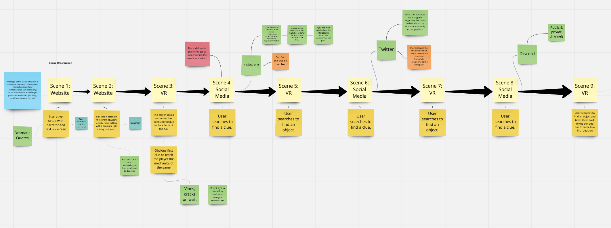
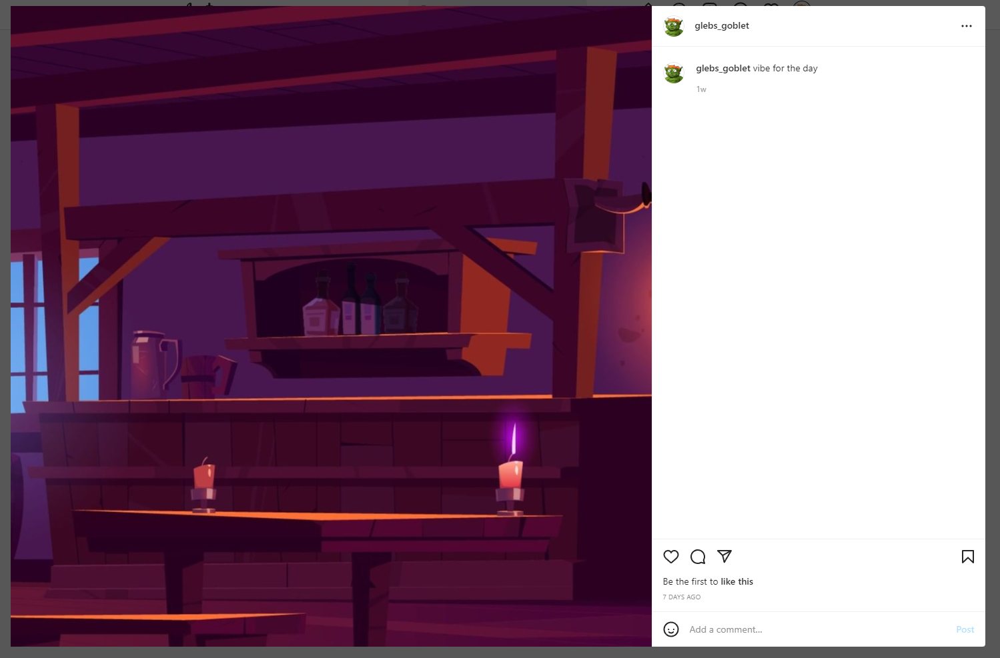
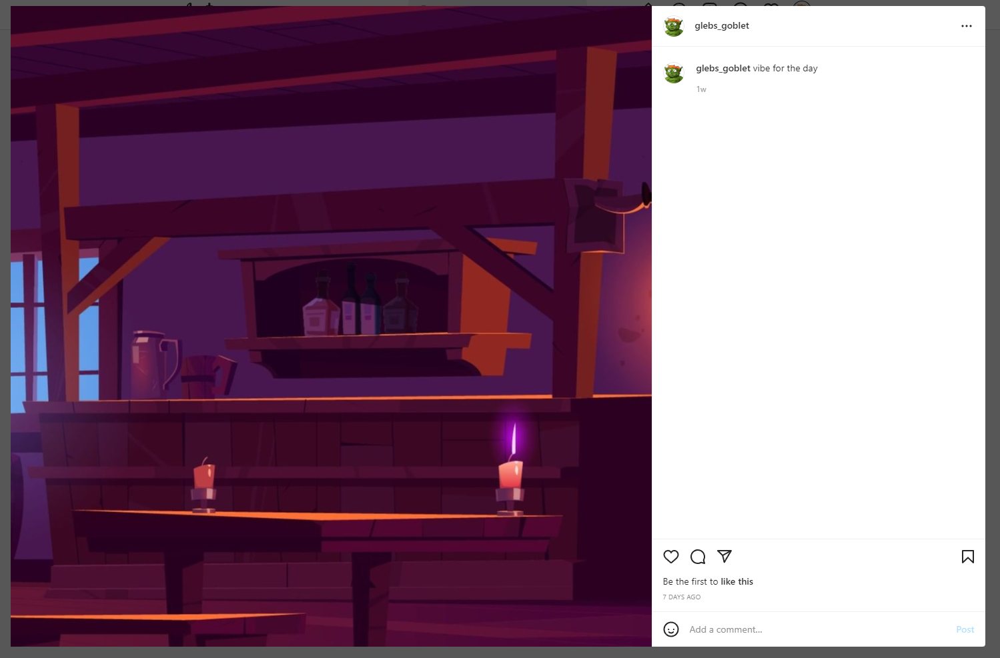

-
Mike Bargen
Social Media Website Devlepment Unity Development
-
Julia Correia
Project Management Website Devlepment Visual Design
-
Malcolm Darko
Assistent Project Manager Narrative Writer Visual Design
-
Bekkele Hamilton
Unity Devleopment 3D Designer
Design Statement
Since this project involved needing to create an interactive user experience, that involved working with a narrative that tells a compelling story while incorporating the use of Unity (upon being introduced to the 3D software in this term). Our objective by the end of the process, was to create a well structured and thought provoking project that we could include as a portfolio piece. In the beginning, we were quite ambitious on the type of directions we wanted to take while exploring multiple opportunities on exploring the theme of curiosity and mystery. However, since this project relied heavily on Unity and with the software still feeling relatively new, we had to make decisions that required alternating the narrative. This project worked really well in terms of discovering another area of working with UX/UI, and developing a new skill with Unity and understanding the depth of working with virtual reality (VR)
Analyzing Pandora’s Box
In order to help gain inspiration for what our narrative could be, we were given an exercise to work on and evaluate different Greek myths that could act as our primary influence. These myths included Jason and the Argonauts, Hades and Persephone, Pandora’s Box, etc. Pandora’s Box immediately caught our interest, and became our first choice in constructing a narrative.Before creating the narrative, we analyzed different points on how we’d quickly summarize the story. The key core concepts included how curiosity carries itself throughout the mythology, and how the consequences of Pandora’s actions unleashed harmful power into the world.
Using Miro
Using the Miro whiteboard, we placed all of our ideas on what direction we would take the story and figuring out the journey flow the user will take when engaging in this interactive narrative experience. One of the first topics we talked about was asking questions on what our general theme would be, the type of narrative we’d tell, the kind of story we wanted to tell that would speak to the audience and what that target audience would be. Since we felt it would be more entertaining to have it targeted towards a mature audience, we generated concepts that would be deemed suitable towards that particular age group. We decided to make a narrative that was complex, a game that was challenging but fun and include elements of humor that would go over a younger audience head. Coming up with the narrative structure involved using familiar formulas that included the ‘Five-Part Structure’ and the “Hero’s Journey”. We even discussed how the story could be the origin story for a possible hero or villain in the making by the time the user reaches the end of the game. Since coming up with a story needs to have an effective message as to why it is being told. Our overall goal was for the message to focus on the theme of ‘curiosity’ and how actions can have consequences if a person doesn’t evaluate the outcomes carefully. Originally, we had a story structure that resulted in more twists and turns to give the game a more dynamic, compelling and suspenseful experience for the users. The intent of this was to try and strengthen the message on how your motivations challenge you to do the right thing or will further corrupt your influence. After featuring out the story, we then layered out how we would place when the user would interact with certain platforms during the narrative. We also included elements on how the scenes would look, to create and develop an articulate creative vision.
 

Project Management
In order to keep track of what everyone’s roles would be in the project, and when we’d have certain assignments we appointed ourselves to do. We used the GANTT chart to keep track of our deadlines, but we also organized having regular meetings every Monday morning to follow up and provide guidance for anyone who needed assistance on their end or giving status reports on their progress. If anyone was mostly caught up on their appointed tasks, we would seek to place our attention in assisting team members who needed extra time.
Selecting VR or AR
During our brainstorming sessions, we were constantly mapping out the pros and cons on which platform we’d use to make the experience more interactive. Although we leaned towards going with choosing the AR (Augmented reality) which would have users go from location to location to scan QR codes within the area. We decided that this would be too challenging to accomplish due to using the remote working method in creating this narrative. We found that if this narrative was to take place in any location it would be on the Sheridan College Trafalgar campus, and if we were able to work on this project in-person we found it would be easier to work with incorporating the AR platform. Since working with VR (Virtual reality) can simply be done online we decided to work with Unity to create our space in which users would find the clues they’d need to retrieve objects. The major challenge in working with Unity was that it proved to be quite difficult where we would all be able to work on the space at the same time. Since this project was our introduction to the software, it was important that we all caught up on the tutorials so that we could do our best to help each other out if we ran into any issues.
Selecting Social Media Sites
The social media sites we decided to work with were Instagram, Twitter, and LinkedIn (originally we planned for the third to be Discord, but we changed it after coming up with a different idea).When users visit these sites, they are meant to search for the clues that will lead them to discovering the object they need to find in the Unity space. The Instagram account focuses on finding a clue that leads to the users finding the object in a book, and the account includes posts of a candle being lit but its flame has different colors. Indicating the color of the books. The Twitter account focuses on finding a clue that leads to the users finding the make-up bottle object in a box. The LinkedIn account focuses on finding a clue that leads to the users finding an object on a globe. There are words within the text on LinkedIn that are capitalized and bolded to give the users a hint that it spells out into a word.
Writing the Narrative
Following the narrative structure we created through the Miro white board application, we started to come up with the story which we agreed would be the users only following the protagonist (Leonard) in a first person format. As established beforehand, while working on Miro we originally wanted the story to have a lot of twists and turns where users could choose to take different paths and had options to choose specific actions. However, this unfortunately had to be altered due to how much more complex it would be to accomplish these actions on Unity. Originally, we had secondary storylines that involved the users having the option to interact more with the objects they found. For example, in one scene where Leonard finds the object related to Bella, user would get to choose whether to put it on the table with the rest of the found objects or look into the object (mirror) before putting it down. In this sequence, the user would encounter a secret about Bella upon interacting with the mirror. This was meant to enforce our general theme on curiosity and what comes out of it if someone isn’t careful. Using this story structure, was to give the users the option on whether or not this narrative will leave to the origin story of a hero or a villain. Which is what also inspired us to have two endings in place that the user could select by the time they finish collecting the objects. Based on all of the potential secrets the users discover, it is meant to factor into what their decision will be at the end. If they choose to keep the objects locked in the chest forever (the hero ending) or will leave the chest open and steal the objects with the intent to use them for personal gain (the villain ending). In the end, to avoid further complications with the Unity software we decided to stick with the singular ending where the user will inevitably make the right choice and fix their unintentional mistake.
2D Assets
Most of the 2D assets used to create the texture within the Unity space were custom made using Adobe Illustrator. While also using and altering vectors from Adobe Stocks for some of the posts that were published on the social media accounts. Before creating final renders of the characters that would be featured, we made rough concepts on what the characters could possibly look like. But then switched to using vectors again for creating the final designs.

3D Assets
Although Unity was our primary workspace for creating the scenes for the narrative, we also worked with other softwares to design the 3D objects. For example, when it came to creating the actual objects we used Rhino and Blender, which we would later import into the Unity file. Additionally, we used many 3d assets from the unity store to create more complex objects that would take too much time. We also designed a layout on Sims as a reference for what our scene would look like in the Unity space.
.png)
.png)
Physical Artifact
The physical artifact of this project is a necessary component to the transmedia experience. The artifact is a key with a tag attached to it that contains the project’s logo, the website address and a five number code on the back. Without the key, the user will be unable to unlock a chest at the beginning of the game, thus halting their progress entirely. This creates a sense of intrigue and exclusivity to the experience as a whole. It will spark discussions about the project as users enquire about the key and share the code among friends.
Website
Start of the Experience End of the Experience The Website for this project can be split into three main sections and serves to both begin and end the transmedia experienceIt starts by offering exposition into the setting of the story and the main character before introducing the chest through an interactive minigame. Finally after everything else has been completed, the user returns to the website for the conclusion. The interaction of searching for the chest in the dark was originally created using vanilla JavaScript. Unfortunately this method proved unsuccessful as we were unable to implement the scrolling method of the user moving the page as they neared the edge of the screen. The solution to this problem was to transition to P5js where we were able to implement all the functionality we had planned. The website functions by creating a large canvas that the user must search through. As the user nears the edge of the screen the x and y values of both the background and chest button are increased or decreased as necessary. A variety of animations and audio were used to further the immersion of the experience. All of the animations were created using Adobe After Effects and were enhanced through free sourced audio that complimented the visuals.
Unity
Unity Space Unity was used as our primary workspace when creating the scene and creating the visual environment that would effectively tell our narrative. The scene itself that was created in unity represents a medieval library. Within our unity world, four key objects are hidden that the user is tasked with finding to continue through the narrative. We utilized the environment we created in our world to hide these objects such as hiding and object in a box, in a pile of books and putting it high up on a shelf that is hard to reach. By doing this our goal was to create a bit of a challenge for the user to make the game more fun and so the overall experience lasted longer. The importance of each object within the unity space was to link to a social media account that would give clues to the player leading them to the next object to be repeated. The objects, materials and lighting played a big role in the visualization of our narrative as it had to match the aesthetic of a medieval library. For example, when creating the lighting we wanted to make it dimly lit with a warm glow as candles from a chandelier and the wall would light up the room. Once the functionality was finalized and in working order, we enabled Unity collaborate. Unity collaborate is a useful tool for small teams to make edits and deploy changes to the Unity space remotely. Unfortunately, one week after setting it up it was discontinued which caught us by surprise.
Social Media Creation
Gleb's Instgram Bella's Twitter Valar's LinkedIn Although creating the accounts were quite easy and simple to put together, making sure we had other accounts that could follow and comment on the posts (primarily on Instagram and Twitter was quite challenging). To resolve this, we also made sure to create bot accounts so that they would appear as realistic as possible. Especially when regarding the characters’ that “owned” these characters and their social status. While the Instagram and LinkedIn accounts focused more on displaying the professional and business side of the characters, the Twitter was more of a personal account that the fairy tale influencer; Bella would use to post her thoughts as well as for advertising her products (but not on a regular basis).
 


Conclusion
The project was a very fun experience to work on collaboratively as we were able to work well by identifying all of our strengths, and apply that to the roles we would assign ourselves with. It was also an effective assignment that allowed us to explore a variety of areas in terms of the use of storytelling and interactivity. Which we felt would enhance our skills in working with UX/UI design. It became a very ambitious project with the amount of details and twists we wanted to incorporate, following the meaningful story we wanted to tell. However, due to working with the Unity software for the first time we unfortunately had to make a lot of adjustments that limited how far we wanted to take it. While a majority of the project turned out well in working with constructing the narrative, creating the 2D & 3D assets, and using social media accounts as a major part of the interactive experience. We felt that working with Unity would’ve been more effective, if we worked together in a format that would allow us to work on the same file.
References
Find a link to our references here.